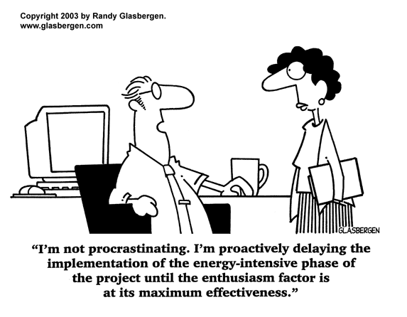

Productivity has been on a steady upward trajectory since the Industrial Revolution. With this increase there has been a corresponding drop in working hours, as illustrated in the graph below:
[1] The graph shows how much more efficient countries with greater access to technology are. Good for you, Norway.Naturally, productivity has skyrocketed since the introduction of the internet and email; now just about everyone has access to WiFi and with that, a seemingly unlimited source of knowledge and the ability to connect with just about anyone we have ever met in our lives, as well as people we haven't met (for better or worse).
So, while our resources are constantly improving, what about us? Is the human worker more efficient than they were in the past? For the vast majority of us according to the latest research, the answer seems to be sadly no -
We are growing increasingly worse at staying on task and with the technology we have access to today, we could be far more effective workers.
[Photo by Tim Gouw on Unsplash] Judging by the head in hand, dimness of the light, and emptiness of this study room, this guy is working late and clearly hasn't been scheduling for productivity.
Two consistently cited killers of productivity are multitasking and excessive meetings [2].
Both are becoming more prevalent due to improving technology. It has never been easier to reach your coworkers and steal their time through various time scheduling applications. While the aspect of improved communication is inherently good, it has caused an increase in workplace obligations and is creating a barrier to scheduling for productivity.
The many tools and applications we have that make us more efficient must be harnessed correctly so that we can take advantage of the positive aspects, without being bogged down by the negative ones in order to optimise the workday. We are working smarter, but not better and we have the potential to do so much more.
Here's why you're not accomplishing more - and how you can change that today:
The Problems:
The technology that makes us more productive can also hinder an efficient routine
The allure of infinite entertainment is often too great to resist. While the occasional Instagram or Facebook break is seemingly harmless and can often be a much needed break during the workday, those minutes add up and cause us to avoid doing tasks, specifically the ones we find to be boring. The expansion of admin and general maintenance time then eats into productive work and prevents us from achieving our goals. Or even worse, the admin in itself, is detrimental to productivity.
Calendar applications such as Outlook give your coworkers access to your work schedule and free reign to steal your time, often for unnecessarily long meetings that could have been avoided by having a quick chat or sending a few emails. But there is an obligation involved and you attend these pointless meetings. This eats into your work time and hinders your ability to adhere to a schedule for productivity.
Scheduling and productivity are inhibited by our propensity to consume dopamine
Humans naturally seek out activities and rewards that give us satisfaction in the form of the chemical dopamine being released in our brains. But is it always smart to seek out our dopamine fixes? When the benefits are predominantly short term it is probably not the best use of time. Immediate sources of dopamine can include snacking and browsing social media. It provides a quick bit of satisfaction. But as research shows, it's highly addictive and the quickest fixes also wear off the fastest, leaving us desperate for more. This creates a necessity for instant gratification that derails scheduling and productivity all day, everyday.
Dopamine has a distinct influence on human decision making and expected rewards for a particular action or task and our brains perceive more immediate rewards to be far more important than those in the future.
This makes us susceptible to distractions and causes us to seek out the tasks that are easiest, but not the most productive.
All of these distractions add up and at the end of the day, you haven't accomplished what you set out to. But don't blame Facebook or your coworker that invited you to that meeting to discuss which kind of cups to order for the coffee machine. You have control over all of this. Youtube will not sneak up and open while you are trying to get your work done and maybe you didn't need to be at that meeting had there been a brief discussion about its purpose beforehand. Scheduling for productivity involves taking back control of your schedule and doing the work that's most important.
In a study by the University of Michigan Department of Psychology, they found that rats with their dopamine neurons destroyed lost interest in pleasures such as food and eventually starved [3]. While, thankfully, this experiment has never been replicated on a human brain, people have done dopamine fasts. This is when someone removes all pleasureful stimulants from their life, including food, sex, electronics, books, and even speaking. Leaving them with only water, walking, writing, and their own thoughts. The results are often intense focus. With absolutely zero distractions or other appealing options, people cite incredible productivity in terms of their writing and mental peace. This led to greater insight into their work and a near meditative resting state [4]. This may sound a bit extreme but the productivity benefits are real and removing the option of instant gratification activities works.
Similarly, the practice of 10 day silent meditation retreats is becoming popular among people that wish to remove the mental clutter from their life. This is even more intense than the dopamine fast described earlier as it limits activities simply to meditation and food breaks. The results are similar to the dopamine fast in terms of the focus achieved from shedding the burden of unnecessary mental baggage. This leaves the participant with a new outlook and the clarity that comes with self-understanding that can be very useful when it comes to prioritisation [5].
Thankfully, it is not necessary to go through a dopamine fast or a silent meditation retreat to achieve greater focus in your work. There is a simpler way to cut the BS out of your daily life to accomplish more. Inefficient practices can be mitigated by introducing scheduling for productivity into your daily life. When you plan your day and commit yourself to an activity at a specific time, much like in meditation, you block other options out from your brain and force it to work with more intention. When applied strategically on a daily basis, this strategy will allow for a more efficient routine.
The Solutions:
1 Do your future self a favour by scheduling for focus
Humans are imperfect, we just have to accept this and learn to deal with our own squirrel-like attention spans. In economics, the term “commitment device” is used for a strategy that locks you into doing something that is beneficial in the long run and keeps you from acting irrationally in pursuit of short-term satisfaction. An example of this would be saving for retirement or a college fund that offers high interest and locks up your money for years, with penalties for early withdrawal or no option to take the money out at all. By opening one of these funds it forces you to save your money, which may be unsatisfying today but you will thank yourself later.
 [6] Without scheduling for productivity, procrastination and lack of direction are inevitable for most people.This is exactly what scheduling for productivity can do for you. When executed properly, a schedule should lock you into certain tasks throughout the day that maximise your productivity and leave you feeling fulfilled at the end of the day. A strategically organised calendar for productivity is an essential tool for anyone looking to optimise their day. This may simply involve allocating specific times for independent work and meetings, but can also extend to free time and leisure activities.
2 Determine your best type of schedule for productivity - you could work like Elon Musk or Warren Buffett
Of course, there are varying levels that scheduling can be incorporated into your daily life and everyone has an amount that is personally optimal, but the prevailing idea is that you must schedule for focus. For instance, Elon Musk schedules his day into five minute “time boxes”. This minimises time wasting to such an extent that he remains on task for nearly every minute of his 90 hour work week [7].
In contrast, Warren Buffett's monthly schedule is practically empty, with only a few important goals scheduled in. This strategy is clearly for someone with incredible self-discipline and focus. While this is an atypical way of scheduling for productivity, it works for him, as he can work on large tasks without getting bogged down by unimportant things due to his “no” policy [8]. This includes strict prioritisation where he dedicates his time exclusively to his five most important goals and removes himself completely from all other work he could be doing. This often includes ignoring unimportant emails and resisting the temptation of completing various small tasks for their correspondingly small rewards. He dedicates all of his working hours intensely focused on reading and making progress towards his top five goals, which, most importantly, include never losing money[9]. He also has a future-focused investment strategy, noting that his most important holding period for a stock is forever [10]. Warren avoids quick money and does his investment with an aim to make significant money over multiple decades after purchase.
[12] Be like Warren, schedule for productivity and don't let others waste your time. But don't eat like him. He eats McDonalds everyday and drinks at least 5 cans of cherry coke. You can't afford his doctors so eat a vegetable or something.With this work schedule, goal-setting is the prevailing commitment device that keeps you working with purpose, no matter how broad these goals may be. The extent to which your day is scheduled, is of course inversely correlated with flexibility. So this is something to keep in mind when choosing the strategy that is right for you and your business.
An efficient routine can come in varying forms depending on personal preference and the intensity of your work.
In order to create a daily routine for success, you must take into account your typical workday and the amount of flexibility you have. If you have consistent days it may be optimal to schedule heavily for greater productivity, while a more unpredictable job will require more leeway in the schedule to deal with any problems that arise during the day.
3 Integrate both proactive and reactive scheduling to optimise your day
Scheduling can fall into two distinctions, proactive and reactive. Proactive work is for the predictable aspects of your workday. This involves working on main projects and attending planned meetings. Scheduling time for reactive work is also important, as most days don't go exactly as planned and something usually comes up.
Reactive work time is spent answering questions and handling the new problems that have been discovered. It is important to incorporate both of these into your work schedule in order to remain on task, yet be flexible enough to support those around you and address unexpected issues.
Balance is important when organising a calendar for productivity. Tracking the amount of time you spend on each of these will give you a good picture of how much flexibility to incorporate into your ideal workday. You can do this with a timeboxing app such as Do Now, that will time how long certain tasks take and set alarms at multiple points during the day to let the user know when to move on to the next task.
4 Schedule your free time
We can't work all the time. You could try but you would end up sleep deprived, unfocused, and probably depressed- which would definitely prevent you from working at your greatest capacity! That is why scheduling for productivity in a way that will keep you motivated and mentally sharp, including breaks and leisure time are highly important. A scheduled break allows you to recharge while also preventing yourself from spiraling into hours of unproductive dopamine binges. Designating a time frame to your break creates a limitation, but it will be more rewarding because your day has been focused and you've earned it. Time management experts recommend experimenting with different times and time frames for these breaks to discern when they are most necessary but don't cause you to be sluggish or unfocused when you resume work.
Breaks are an underrated way to keep your mind fresh and working smoothly, while keeping morale high.
You will also feel less guilty when you know you have time to take one and it won't eat into valuable working time. To apply this to your schedule for productivity, try the time blocking/boxing method. This is essentially the strategy mentioned before that is used by Elon Musk (except he takes it to an extreme level). Blocking out specific times (typically hour long intervals) to work on a specific task or take a break will bring focus to your work and minimise the potential for distractions. This is important when considering the detriment to productivity that multitasking brings.
A study conducted by Europe's Journal of Psychology attempted to measure the negative effects of multitasking using both a driving simulator and an audio-visual quiz to simulate office tasks. They found that not only did proficiency decrease significantly, but strain (measured by an increase in heart rate) increased significantly [12]. Therefore, they determined that multitasking made people worse at completing tasks and made them more mentally and physically stressed. For the sake of your performance and health, consider using time boxing when scheduling for productivity. (See mayooshin.com/time-blocking-elon-musk-manage-time/ for more information on time boxing/blocking).
[Photo by Tirza Van Dijk on Unsplash] It's easier to focus on one screen than two.5 Create consistency in your schedule with a planning routine
Designating time before your work week begins to create a concrete schedule for productivity is a useful organisation strategy to optimise your workday and build an efficient routine. We previously touched on the topics of unnecessary meetings and multitasking and how they can derail productivity and focus.
Take a few minutes on a Sunday night to plan the work week with your own priorities in mind instead of passively waiting for your coworkers to determine how your time is used with the meeting invites and favours they have prepared for you on Monday.
This will bring consistency into your day and allow you to work on the schedule that is most efficient for you through the elimination of disctrations. It is still necessary to incorporate time blocks for reactive work, as everything is not entirely predictable, but it is worth trying to do this work on your own terms as well. An inconsistent schedule is potentially detrimental to focus and the flow of your work.
Even if your workweek is on a flexible schedule this strategy can work for you. Determine the hours you know you have free and think about what the best uses of this time could be. Whether it be for work, reading, or a much needed break from a busy week, giving this time purpose on your calendar will greatly increase the likelihood that you will use the time the way you see best because of the commitment device. Flexible schedules are great because of the inherent freedom, but they also add an aspect of uncertainty to your work week. There's no reason to allow this to keep you from using your time efficiently, though. Scheduling for productivity can still be accomplished with a bit of foresight and a shrewd plan for the week ahead.
6 Implement purposeful scheduling for productivity into your daily routine with calendar tools such as CalApp
For someone that has never kept a daily schedule with deliberate motivation, as discussed in this article, it may appear daunting at the start. But the aforementioned technology that is distracting you from your work, is also here to do the exact opposite. Specifically, CalApp.
With CalApp, you can truly schedule for productivity, as there is no need to give calendar permissions or share your personal calendar with anyone- yet it allows you to present your availability to others exactly how you want, thus taking control of your day.
CalApp analyses your Google Calendar locally on your computer (so you don't need to “login with Google”). In fact, it works with any other calendar application that can be imported into Google (such as Apple Calendar, Outlook e.t.c).
It has flexible settings that can be adjusted to your working schedule and can factor in breaks or travel time of any length. This allows you to build your own workday and meet with people during the free time you present, for duratings of your choosing.
Depending on personal preferences, this could allow you to schedule for productivity and block out large amounts of time for focused work. The purpose of the app is to allow you to quickly share your availability as you want to present it and to reduce the user's time spent determining their free time, as well as cutting out the nauseating permissions and insecurity that come with many calendar sharing apps.
Now you're ready to start scheduling for productivity!
With a free tool like CalApp and a commitment to scheduling for productivity you have everything you need to get the most out of your week! It is of the utmost importance that you remain in control of your own time in order to be at your most productive in an era that produces greater distractions than ever before due to technology. It's time to reclaim your own availability and work the way you want to work. With a commitment device in the form of a well-structured schedule you become a more disciplined worker and it will show in terms of productivity and efficiency.
As Thoreau said, “It's not enough to be busy, so are the ants. The question is, what are we busy about?” Be aware of how you're using your time. If you don't have time for what is most important and needs to be done, consider making a change. What better place to start managing time and priorities than your calendar?
[1]
ourworldindata.org/working-hours
[2]
kanbanize.com/blog/low-productivity/
[3]
lsa.umich.edu/psych/research&labs/berridge/publications/Berridge&RobinsonBrResRev1998.pdf
[4]
medium.com/personal-growth-lab/i-did-a-24-hour-dopamine-fast-this-is-what-happened-8f691f33c608
[5]
mindbodygreen.com/0-29263/i-went-on-a-10day-silent-meditation-retreat-heres-what-happened.html
[6]
cindyjobs.com/2018/07/24/the-real-costs-of-procrastination/
[7]
mayooshin.com/time-blocking-elon-musk-manage-time/
[8]
medium.com/accelerated-intelligence/warren-buffett-really-successful-people-say-no-to-almost-everything-ab78832ffebc
[9]
businessinsider.com/warren-buffetts-not-to-do-list-2016-10?IR=T
[10]
investopedia.com/financial-edge/0210/rules-that-warren-buffett-lives-by.aspx
[11]
yourselfquotes.com/warren-buffett-quotes/
[12]
ejop.psychopen.eu/index.php/ejop/article/view/226